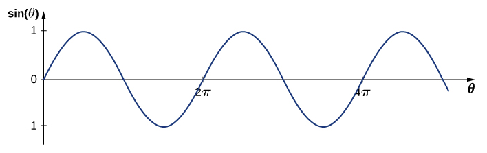
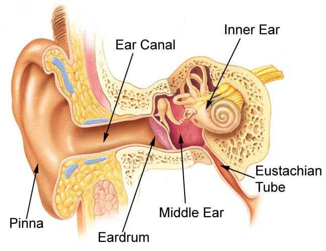
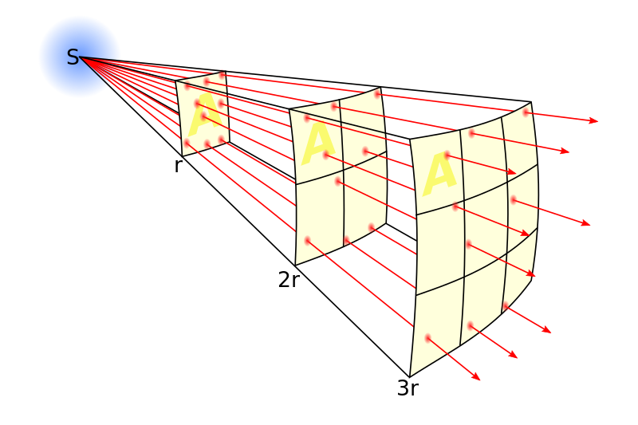

What is sound, Really? Well ask no more in this pace we will go over the properties of sound in both a mathicical sense, and in a biological sense. We will top things out with how sound is affected by distance.
Sound is:
Interesting, but what does it mean. Well I will break down what each bullet means below. let's get into it.
Lets start with the term wave. Now, this wave isn't like that found in water (although sound can travel through it). Sound is just the transfer of energay in the form of a wave.
Next, lets talk about longitudal. This is the type of wave sound is. It means that this wave compresses and expands like a spring. this is in contrast to transverse waves that move up and down like ripples in water.
Finnaly, lets talk about the word mechanical. This can mean a lot of things. However, in this case it means that the wave needs somthing to exist. For some examples solids, air, or liquids to vibrate. This is in contrast to electromagnet waves like lightm that can travel through a vacuum.
To nearly all life on earth sound waves are vibrations. more specificly vibrations that hit the ear drum, vibrate some nerves and convert those vibrations to sound. This is how most living beings hear, and interprit sound.
If sounds a wave, why can we not hear sound far away, shouden't we be able to hear it from anywhere? Well, the answer is no, and I'll tell you why. The simple answer is as follows.
So why can you hear sound waves from everywhere. well its due to the fact that sound insn't one strait line. I'm not sure if you noticed, but you don't need to exactly stand right in front of a speacker to hear it, you can go one the side of a speacker and still hear it. and becuase energy can be created or destroyed, the farther you go from a sourse of sound the more the energy spreads out. Logicly, The same amount of energy over a larger distance means that it's quieter (this is called the inverse square law).
